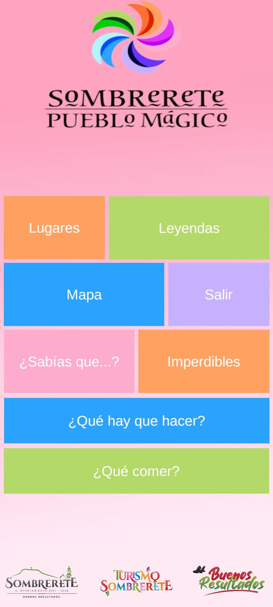
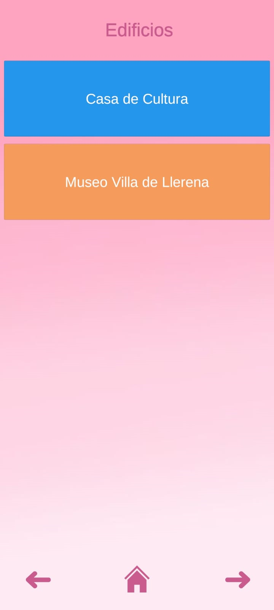
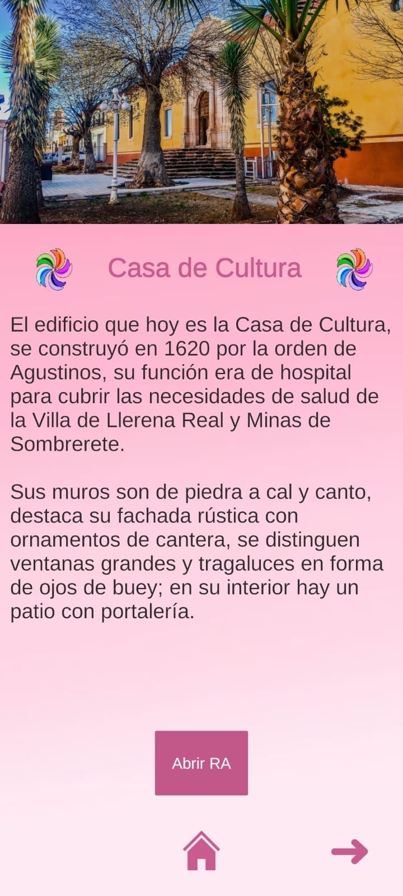
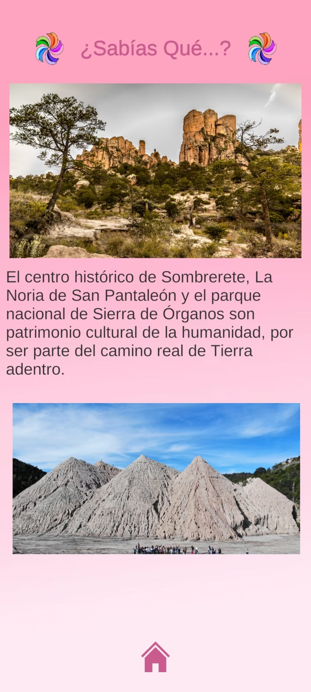
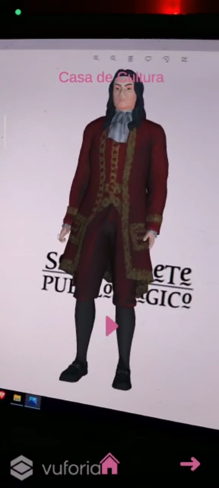

Som Magic
Este proyecto consiste en desarrollar una aplicación móvil que contenga realidad aumentada con el objetivo de ayudar a Turismo de Sombrerete, Zacatecas con los cuales se tiene colaboración directa a contar con implementaciones digitales y que de esta manera cumplan con requisitos necesarios para mantener el título de pueblo mágico que ha tenido el municipio de Sombrerete desde el año 2012. En el presente proyecto se pretende dar solución a la problemática planteada por el Departamento de Turismo de Sombrerete, Zacatecas dicha problemática es la falta de estrategias digitales para el ámbito turístico en la cabecera municipal, este problema tiene como consecuencia el incumplimiento de los requisitos impuestos por la SECTUR los cuales son requeridos a todos los pueblos y ciudades que tengan la denominación de pueblo mágico en el país como es el caso de Sombrerete, Zacatecas, por lo tanto en el presente proyecto se desarrollará una aplicación móvil llamada “SomMagic” construida principalmente en el software de Unity usando realidad aumentada la cual funcionará con base a imágenes llamadas disparadores que harán proyectar un modelo en 3D con información multimedia del patrimonio histórico cuando se apunte con la cámara de un celular inteligente.
    